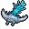

雷雲の獣 Sky beast
英語版 CrawlWiki の記事「Sky beast」(0.34 向け、2026-02-05 版)の翻訳です。原文の著者は編集履歴をご覧ください。
| 雷雲の獣 F  | |
|---|---|
| HP | 18-37 |
| HD | 6 |
| XP | 130 |
| 速度 | 10 |
| AC | 3 |
| EV | 13 |
| 意志力 | 20 |
| 攻撃1 | 6(打撃: 旋風)
|
| 耐性 | rElec+++ |
| 弱点 | なし |
| 生息地 | 陸上 |
| 知能 | 動物並み |
| 使用 | 何も使わない |
| 分類 | 生物 |
| 体格 | 大きい |
| 種類 | 雷雲の獣、雷雲の獣 |
| フラグ | 飛行 骨格なし |

| 肉でできた雲と電気の羽根から形作られた、奇妙な空の生物だ。一撃ごとにダンジョンのかすかな風の流れを操り、獲物の周りの開けた空間の広さに劇的に比例して犠牲者を吹き飛ばす。
「彼女の母親は晩年、電気が目に見えないまま家じゅうに滴り落ちているのではないかという恐ろしい疑いを抱いて暮らした」 |
基本情報
雷雲の獣は風変わりな飛ぶ生き物で、迷宮の浅い階、たいていは迷宮:6あたりに現れる。攻撃が当たると旋風を起こし、相手の周りの空いたマスが多いほど追加のダメージが増える。
小技
- 近接で戦うしかないなら、近くの通路か隅に下がろう。開けた場所で戦うと、こいつのダメージはかなり大きくなる。
- 雷雲の獣の移動速度は普通なので、どんなプレイヤーでも(ナーガやバラチは別として)簡単に逃げたり、狭い場所へ移ったりできる。
- 電撃は完全に効かないが、ほかの属性なら問題なく効く。あなた自身の旋風の一撃でもダメージを与えられる。
変更履歴
- 0.33より前は、雷雲の獣の攻撃には電撃の追加効果があった。また、ときどき透明になり、雨の雲を生み出した。
- 0.21より前は、雷雲の獣の肉を食べると変異した。
- 0.12より前は、雷雲の獣は深手を負うと逃げ出した。透明になる癖とあいまって、とどめを刺すのがひどく面倒だった。